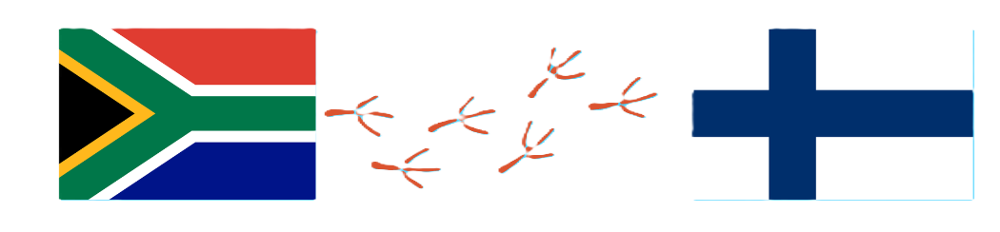
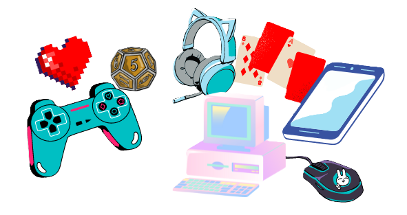

Get to know Kit
Howdy folks. I'm Kit (they/them), a BICT student in Finland.
I moved to Finland late 2020 during the panini (Covid-19 pandemic) with my partner due to a job offer they received.
I'm originally from South Africa, but will be staying in Finland permanently.

I study Business Information Technology at Haaga Helia University of Applied Sciences (AMK).
My major has been in Software Engineering, but my true passion lies in Video Game Development.
I've facilitated the springboarding of my focus from my foundation in Software to my future in Game Dev
by incorporating courses from other universities and platforms to my education.
My estimated graduation date is Fall 2024 or Spring 2025.
I love gaming in all of its forms, from cards and tabletop RPGs, to video games on various consoles.
You can find me playing Angry Birds Dream Blast and Merge Mansion on mobile, or at Cafe Board Game
playing Dungeons and Dragons or any number of board/card games.
I love Baldur's Gate 3 and Cult of the Lamb on PC but for console, Genshin Impact stays on top.
By now you might be able to tell that I love fantasy, adventure, storytelling, and world-building.
When I'm not playing games, I'm learning how to make them, check out my Unity Play to see some of the projects
I've been working on.

My other interests are reading/watching fantasy, spending time outdoors with my dog, and visiting anime conventions in
the summertime.
I'm part of the LGBTQIA+ community and equality and inclusivity are of paramount importance to me.
My values are integrity, kindess and honesty.
I work hard and do my best.
My biggests strengths are innovation, creativity and determination.
These combine into my super strength: figuring it out.
If I don't know how to do something, I use my innovation, creativity and determination to figure out how to do it.